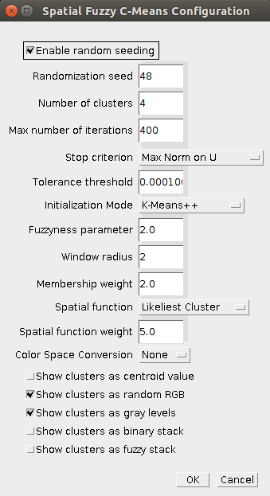

SFCM
Authors
Antonio Vergari and Francesco Tangari
Advisors
Laura Caponetti laura.caponetti@uniba.it and Giovanna Castellano giovanna.castellano@uniba.it
Development and history
Latest version is 1.2 developed in 2011.
ImageJ
Developed under ImageJ 1.38
Source
https://github.com/arranger1044/SFCM
Binaries
You can find the plugin as a jar file under the Releases directory
Version 1.2
Installation
Put the sfcm_clustering.jar file into the ImageJ plugins folder and re-launch it. Under the menu Plugin>Segmentation, you will find four new plugins:
- Jarek Sacha's K-Means Clustering the original K-Means plugin by Jarek Sacha
- K-Means Clustering
- Fuzzy C-Means Clustering plugins
- Spatial Fuzzy C-Means Clustering
Plugin Description
This is a set of ImageJ plugins for color image segmentation. The set features four plugins:
- The original K-Means plugin from Jarek Sacha's IJ Plugin Toolkit (that you can also find here)
- A refactored version of the original K-Means plugin providing color space selection (RGB, XYZ, Lab*, HSB), a simpler initialization criterion and a few more visualization modes
- A Fuzzy C-Means variant introducing another initialization criterion plus a new visualization mode
- A Spatial version of the Fuzzy C-Means algorithm that considers, for each pixel, a window containing the neighbor pixels in order to compute the membership function
Features
Color space conversion
Color images can be converted into four different color spaces (considering RGB) leading to differently clustered images:
- XYZ a standardized color space, similar to RGB but with less correlated components
- Lab* a perceptional uniform color space that provides human predictable segmentation results
- HSB similar to Lab* for its purpose of giving a more human readable color representation, but differs in the representation of the luminance component and consequently of the chroma
Visualization modes
- Cluster Centroid Color each cluster has been assigned its centroid color (in case of color conversion the color space is converted back to RGB)
- Gray Scale each pixel is labelled with the number of the cluster it belongs to, and the image range is stretched in 0-255
- Random RGB a random RGB color is generated for each cluster, it may be very useful when many clusters share a similar centroid color value
- Binary Stack a stack of binary images is outputted, each of those representing a cluster: a black pixel belongs to the current slice cluster, a white not. It may be useful to extract back the original region with an OR operation
- Fuzzy Stack a stack of gray scaled images is used to show the membership values of each pixel to each cluster, the darker the pixel in a slice, the more the corresponding pixel in the original images belongs (in a fuzzy sense) to the currently selected cluster
Usage
Here is a brief description of a use case:
- Specify the number of clusters
- Specify a termination criterion: max number of iterations or thresholded norm on matrices
- Specify a way to init the clusters (default K-Means++)
- Specify a fuzzyness parameter (1.0 is equal to standard K-Means)
- Specify the number of clusters
- Specify the neighborhood window radius
- Specify the spatial function and its weights
- Specify whether to convert the color space
- Specify one or more visualization modes

Changelog
26/12/2010
Refactored the K-Means Plugin according to the new design (now the algorithm is much more independent form ImageJ API)
30/12/2010
Created a new package from the upcoming Fuzzy C-Means version of the plugin. Started to work on it.
3/01/2011
Started to work on the Spatial version of the Fuzzy C-Means algorithm.
15/01/2011
Released version 1.0 of the plugin suite with several bugs fixed and a working spatial implementation
5/02/2011
Released version 1.1 implementing a way to disable the random seeding